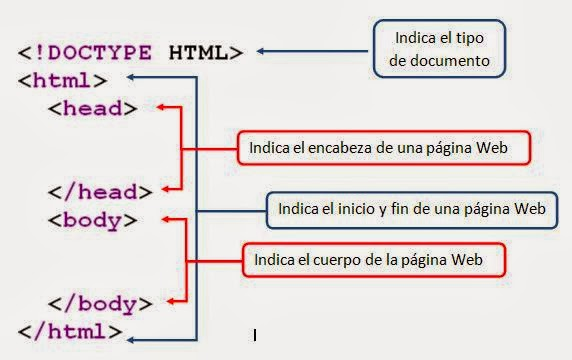
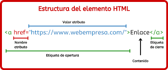
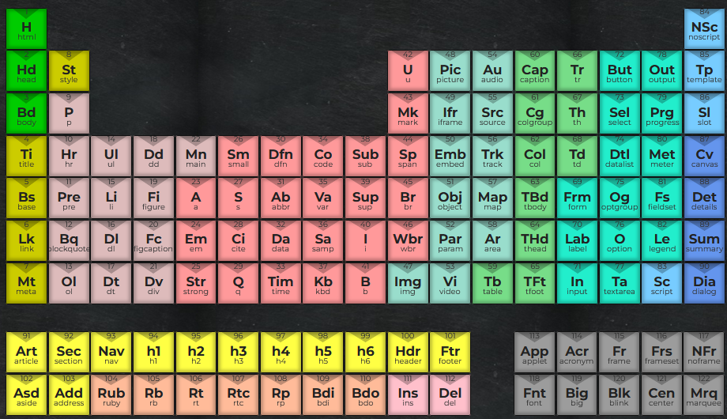
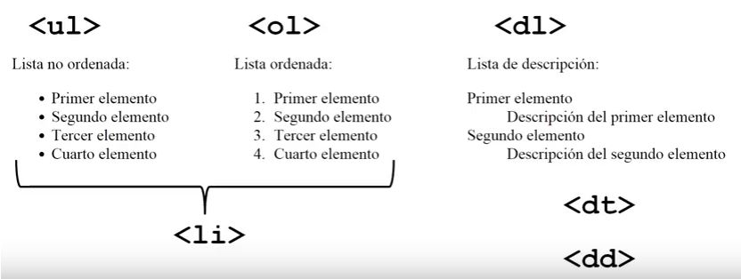
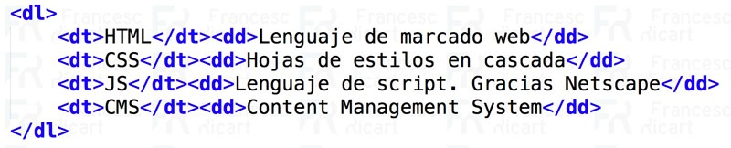
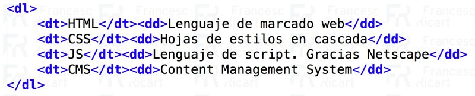

HTML, significa HiperText Markup Language, es decir, Lenguaje de Marcado de hipertexto, esto significa que lo que hace es Marcar al texto de una hoja. Es como si se agarrara un parrafo o un texto de una pagina y se le resaltan las palabras con color. Solo que este caso es con etiquetas. ¿Para qué? En este caso para darle otra conformación al texto o al parrafo, y acomodarlo de otra manera, e incluso crear otra distribución de las palabras como así tambien (html en sus comienzos) darle estilo al texto. Esto explicado es desde el punto de partida de un texto, parrafo o pagina, hacia una pagina web.
En el diseño de la estructura de una pagina web (en los marcados) que se le dan a un texto existen varios, estos son en su forma basica un etiqueta principal la cual abarcar todo el archivo en sí: html, (que es el nombre del formato del archivo html) dentro de esta el archivos tiene dos partes, la etiqueta head, que es como la cabecera de todo, el cual en esta se escribe las conexiones a otros archivos, datos de tipeo, de estilos, de horario (en base al uso horario entre otras cosas), a continuación escribimos lo mencionado de forma completa. (tomando lo explicado en el concepto de HTML, en este caso el ejemplo es como si la hoja estuviera en blanco sin palabra alguna pero con etiquetas de marcado de todas forma)
cabe destacar que es la idea más basica y que luego aparecen otras etiquetas con funciones similares a la mencionadas, el cual forman parte de un standard o de una estructura predeterminada ya para el trabajo, sobre el diseño de pagina.
Las etiquetas representan funciones las cuales al marcar al texto, lo asocian con un tipo de comportamiento o estilo tomando el contenido el contenido dentro del mismo permitiendole interactuar con el usuario de la pagina web.
Como html tiene etiquetas que determinan la organización del texto o de los elementos en la pagina, como del estilo, se mostrara a continuación la estructura interna de una etiqueta el cual seria similar como a marcar justamente el texto.
Como son muchisimas las etiquetas de marcado a usar (y si bien no todas se usan) si se puede considerar, clasificarlas segun su función, de tal manera que sea posible acordarse de determinadas nomenclaturas
A continuación dejamos una imagen con una cuadro parecido a la tabla periodica de los elementos quimicos, pero con elementos html.
fuente:https://lenguajehtml.com/html/introduccion/tabla-periodica-html5/#
Las listas son un tipo de etiqueta el cual justamente generan una lista del contenido que envuelven, es decir, generan listas. Para poder crearlas, hay que llamar al tipo de lista y luego generar el item de cada uno de los elementos de la lista. Hay varios tipos de listas, ordenadas y desordenadas. La etiqueta para las listas ordenadas es ol (proviene de Ordered List) y para las listas desordenadas son ul ( proviene de Unordered List) Las ordenadas como se indican son marcadas con numeros o letras para determinar la prioridad de la lista justamente. las desordenadas simplemente son marcadas con un punto de forma predeterminada.
Una vez determinado el tipo de lista, se determina el item con la etiquetali, esta funciona para todos los tipos de lista, ya que se encuentran dentro de ellos
Por otra parte tambien se encuentra la lista de definición, la cual pueden asociarse a los tipos de listas que clasifican algo por tipo. la etiqueta para la lista de definición es dl la cual proviene de Definition List; y a diferencia de los tipos de listas anteriores, se determina un nombre para la clasificación (llamado de forma correcta el termino) el cual sera el contenido dentro de la etiqueta dt proveniente de Definition Term y los items dentro del termino llamados con la etiqueta dd la cual podria provenir de Definition Data.  

Bibliografia:
https://lenguajehtml.com/html/semantica/etiquetas-html-de-texto/#etiquetas-html-de-edicinÁlvaro Velázquez